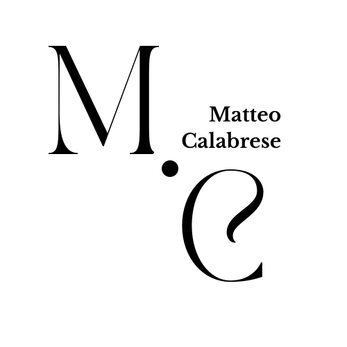

Welcome to Matteo Calabrese's website

Hi, my name is Matteo Antonio Calabrese, I live in Atella, I'm originally from San Fele. I was born on 12/22/2006 in Rome. The first year of high school I attended the professional school in Pescopagano with a dental technician focus and then the following year I moved to Potenza to the Einstein de Lorenzo institute with a focus on computer science which I still attend today.
In my free time I like playing PlayStation, going out, going for motorbike rides and having fun with my friends. My hobby is kick boxing.